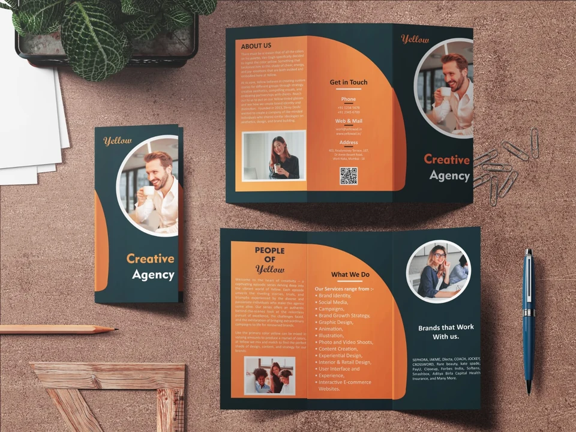
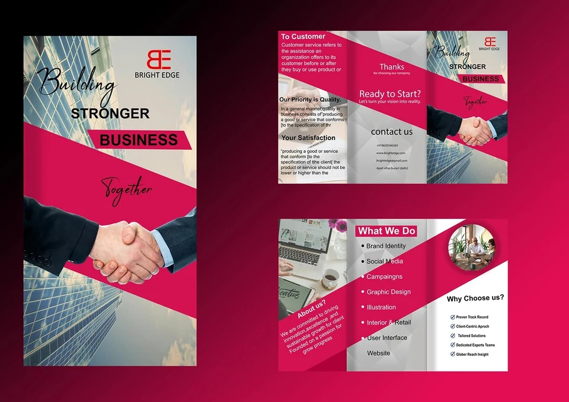
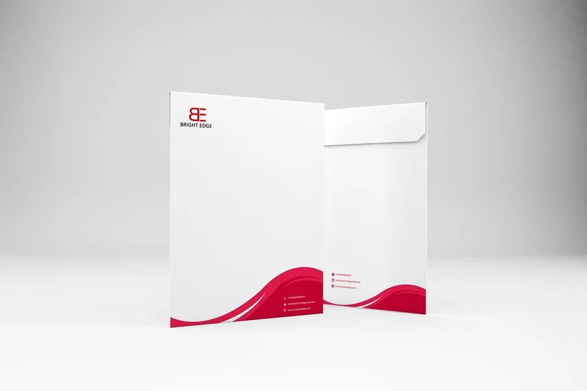
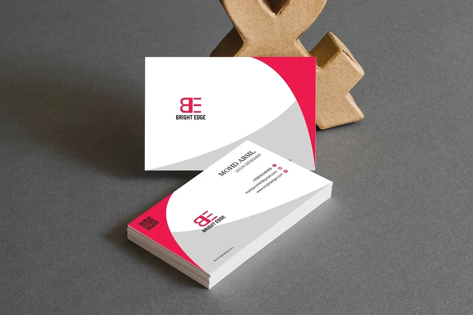

04 / Brand identity
Branding.
Branding across print, stationery, brochure layouts, signage and identity applications.

Branding work for IFFCO Urban Gardens, Yellow, Red Dash Media and Bright Edge. Plantable diary mockups sit alongside brochures, signage, stationery and business cards, showing identities across different formats.
- Context
- IFFCO Urban Gardens · In-house
Yellow, Red Dash Media & Bright Edge · Freelance - Role
- Graphic design & branding
- Scope
- Brand applications, stationery, brochures and presentation mockups
Print,
with purpose.
IFFCO Urban Gardens / Plantable Diaries
Brochures,
with character.
Yellow & Red Dash Media



An identity
in use.
Bright Edge / 04 applications







Different formats.
Distinct identities.
Space for the story.
Brochure panels bring together headlines, imagery and supporting information, with each layout establishing its own reading order.
A recurring visual language.
Bright Edge’s red, white and grey palette connects its brochure, signage, stationery and business cards.
From print to place.
Printed pieces and presentation mockups show the identity across both smaller materials and a larger sign.